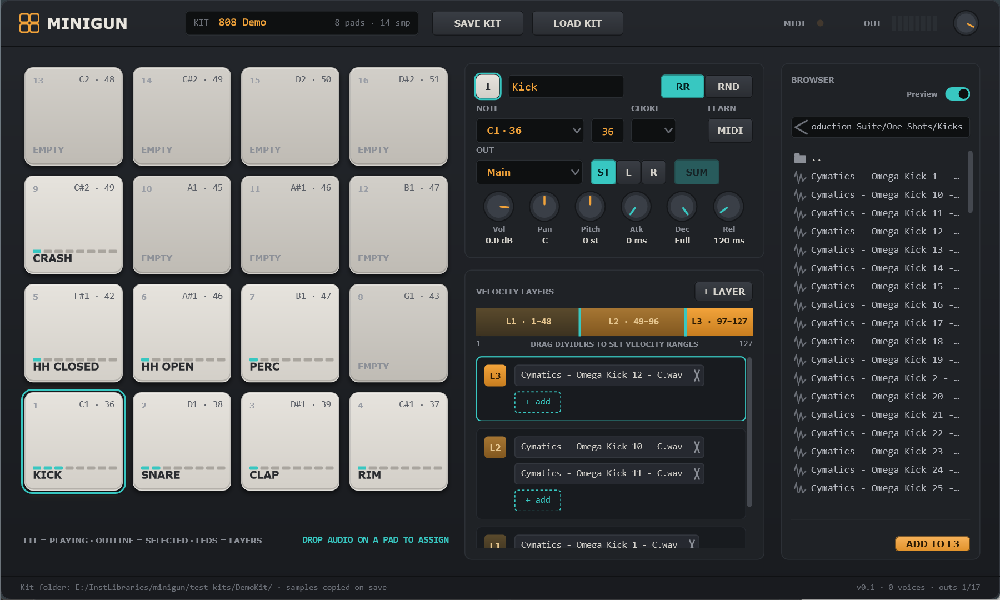
Minigun is a lightweight drum sampler in the spirit of hardware pad machines. Sixteen pads each hold one instrument: a MIDI note, up to eight velocity layers, and any number of samples per layer that alternate round-robin or at random. Every pad has its own volume, pan, pitch, envelope, choke group and output bus, so a whole kit can be mixed inside your DAW on separate tracks.
Kits are portable: when you save a kit, Minigun copies every sample into the kit folder and stores relative paths, so the folder can be moved to another project or another computer without broken links.
Minigun.vst3 (the whole folder) to C:\Program Files\Common Files\VST3\, then rescan plug-ins in your DAW. Minigun appears as VST3i: Minigun (Dallas Audio).Minigun.exe. Use Options → Audio/MIDI settings to pick an audio device and a MIDI input. Only the Main output is available in Standalone.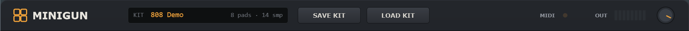
| Control | What it does |
|---|---|
| KIT display | Shows the kit name, how many pads have samples and the total sample count. The name is taken from the folder you save into (a kit called Untitled Kit is renamed automatically on first save). |
| SAVE KIT | Saves the kit. The first time it opens a folder picker (default location: Documents\Minigun Kits). Choose or create a folder: Minigun writes kit.json there and copies every sample into a samples\ sub-folder. If the kit already has a folder, it saves there directly without asking. |
| LOAD KIT | Opens a folder picker. Select a folder that contains kit.json; all pads, layers and settings are replaced by that kit. |
| UNDO / REDO | Step back and forward through every kit edit: knob moves, names, notes, layers, dropped samples, even a loaded kit. A continuous knob sweep or typing a name counts as one step. Keyboard: Ctrl+Z undo, Ctrl+Y or Ctrl+Shift+Z redo (the plug-in window must have keyboard focus: click on it first). Up to 200 steps; the history is cleared when a project is reopened. |
| MIDI | Lights amber for a moment whenever a MIDI note-on arrives. Use it to confirm the DAW is routing MIDI to the plug-in. |
| OUT | Eight-segment stereo peak meter of the plug-in output (the loudest of all enabled buses). Teal segments are healthy, amber is hot. |
| Master knob | Master volume, −60 … +6 dB. This is the only DAW-automatable parameter; everything else belongs to the kit. |
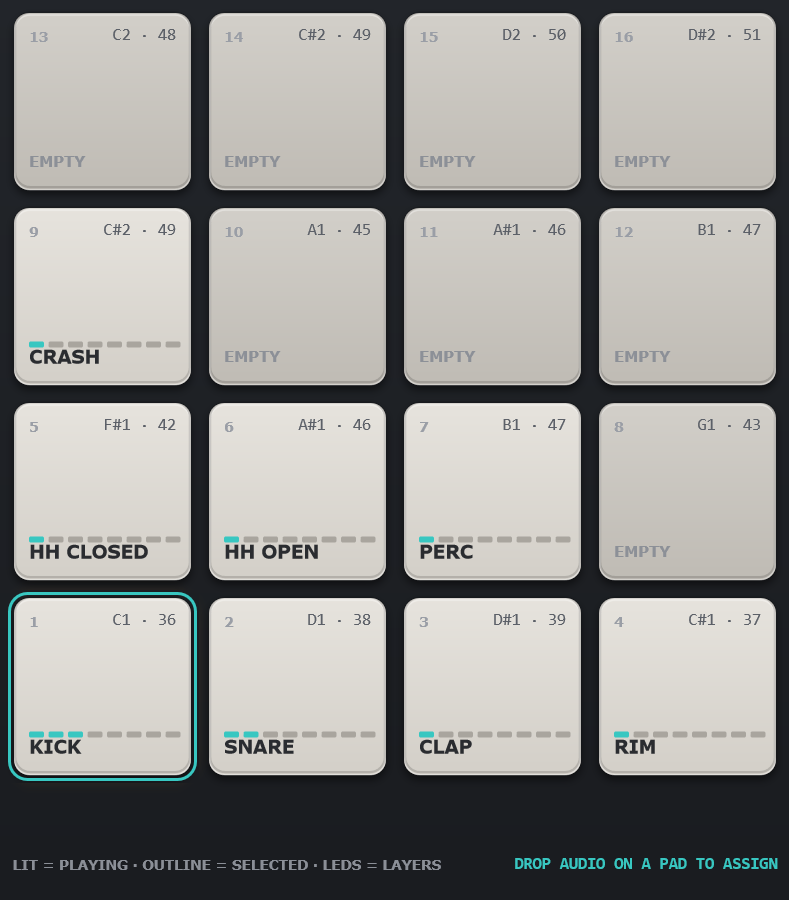
C1 · 36.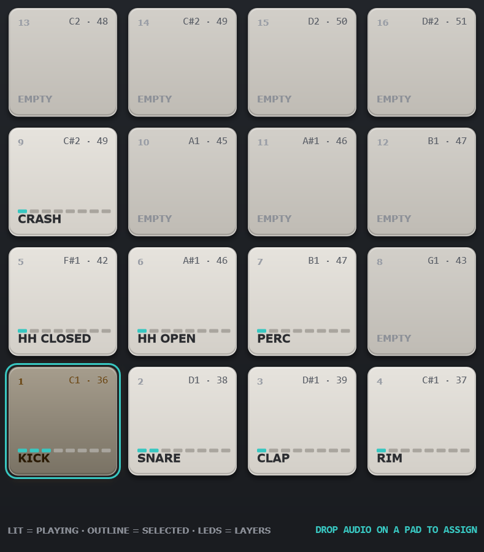
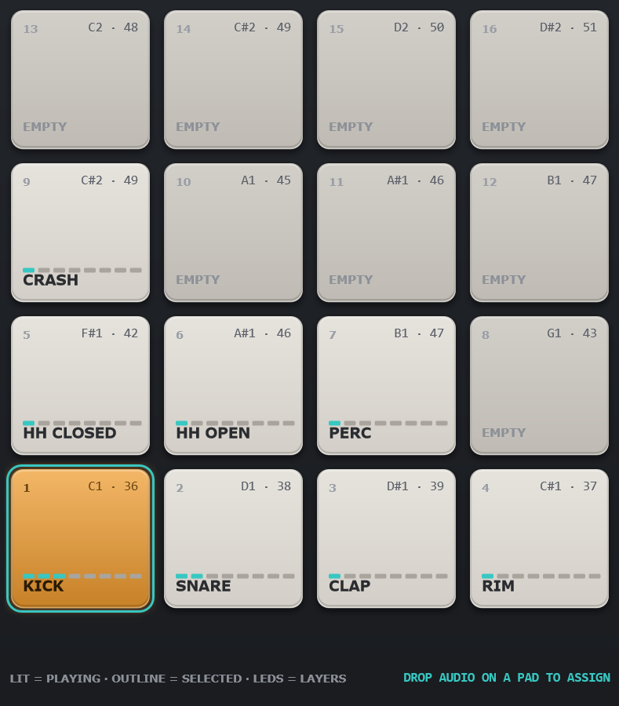
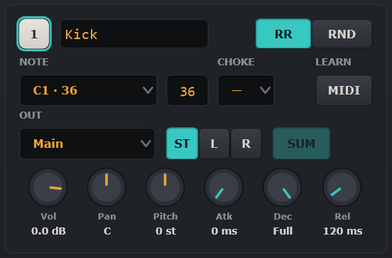
| Control | What it does |
|---|---|
| Badge + name | The pad number and an editable name. Click the field and type: the name is saved as you type and shown on the pad; Enter, Esc or a click anywhere else leaves the field. |
| RR / RND | How samples inside a layer alternate. RR (round-robin) plays them in order 1, 2, 3, 1…; RND picks one at random on every hit. Use several similar samples per layer for a natural, non-machine-gun feel. |
| NOTE | The MIDI note that triggers the pad. Pick it from the drop-down (all 128 notes, C1 · 36 style) or type the number into the field next to it and press Enter. The mouse wheel over the drop-down steps by one semitone. Several pads may share a note: they all play together. |
| CHOKE | Choke group, — or 1…8. Pads in the same group cut each other off: when one is hit, the others in that group are released immediately. Classic use: closed and open hi-hat in group 1, so the closed hat stops the open one. |
| LEARN / MIDI | MIDI learn. Click the button (it lights teal), then hit a key or pad on your controller: that note is assigned to the selected pad. |
| OUT | Output bus of the pad: Main or one of the 16 stereo pairs Out 1-2 … Out 31-32. See §9 for routing in the DAW. |
| ST / L / R | Stereo or mono output. ST sends the pad to both channels of the pair with panning. L sends a mono signal to the first (odd) channel only, R to the second (even) channel. In mono mode the OUT list shows single channels (Main L, Out 3, …) and Pan is ignored. |
| SUM | Only for L/R modes. On: a stereo sample is summed to mono ((L+R)/2) before it goes to the single channel. Off: only the sample channel that matches the side is used. Mono samples are unaffected. |
| Vol | Pad volume, −60 … +12 dB. |
| Pan | Stereo position, L100 … C … R100 (constant power). Not used in mono modes. |
| Pitch | Transposition by resampling, ±12 semitones in 0.1 steps. Positive values are shorter and brighter. |
| Atk | Attack, 0 … 500 ms: fade-in from the start of the sample. 0 ms = the natural transient. |
| Dec | Decay / hold length, 1 … 5000 ms. Fully right = Full: the sample plays to its end. Shorter values cut the tail and start the release. |
| Rel | Release, 1 … 2000 ms: the fade-out applied when the decay time ends, or when the pad is choked by another pad of its group. |
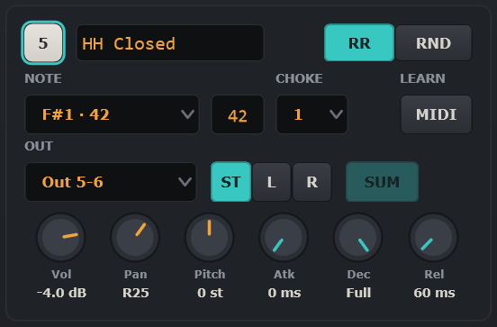
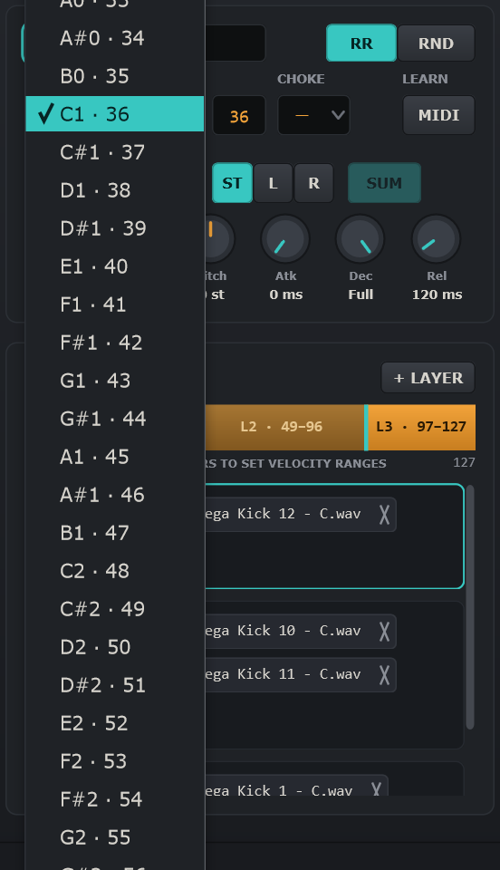
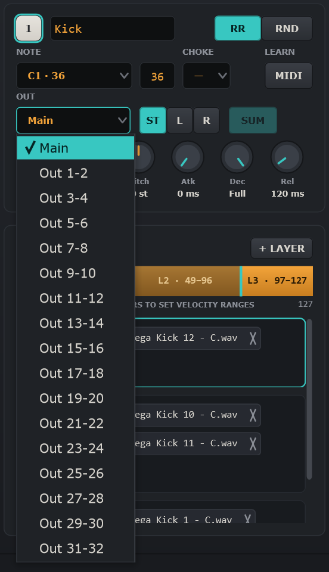
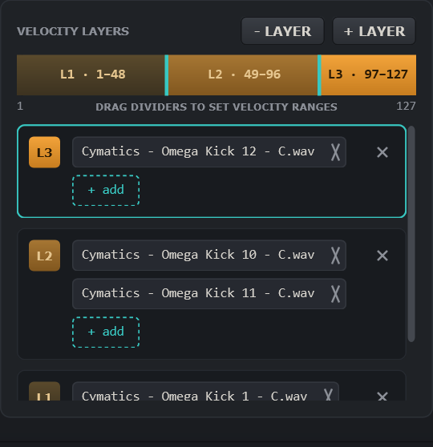
A velocity layer is a velocity range (1–127) with its own list of samples. When a note arrives, Minigun finds the layer whose range contains the velocity, then picks one of its samples by the pad's RR/RND rule. Layers are contiguous and never overlap; the panel keeps them valid for you.
| Control | What it does |
|---|---|
| Range bar | One coloured segment per layer, from dark (soft) to bright amber (hard). Drag the teal dividers to move the boundaries. Click inside a segment to audition that layer: the pad plays at the clicked velocity, so the layer and the RR/RND rule apply exactly as with a MIDI note. |
| + LAYER | Adds a layer on top: the current top layer is split in half and the new (empty) layer takes the upper part. Up to 8 layers. |
| Layer rows | One row per layer, top layer first. The coloured badge (L1, L2…) matches the bar. Click a row to make it the selected layer (teal frame): the Browser's ADD TO Lx button and double-clicks add files to it. |
| Sample chip | One chip per sample. Click the name to preview the sample. Click × to remove it from the layer (the file on disk is not touched). |
| + add | Opens a file dialog (multi-select) and adds the chosen files to that layer. |
| × (row) / − LAYER | Deletes a layer: the × in the top-right corner of a row removes that layer; − LAYER in the panel header removes the selected layer. Right-click on a row offers the same Delete layer. The removed range goes to the neighbour below (or above for the lowest layer); samples on disk are untouched. |
| Drop target | Files dragged from Explorer or the Browser can be dropped on a row or on a bar segment (that layer) or anywhere else in the panel (the selected layer). The target is highlighted with a dashed teal frame while you drag. |
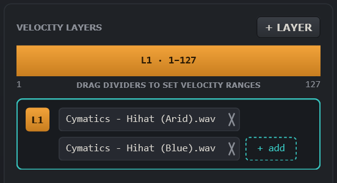
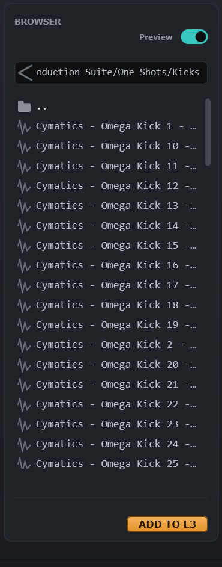
| Control | What it does |
|---|---|
| Preview | When on, a single click on a file plays it through the plug-in's Main output. Turn it off to browse silently. |
| ‹ (arrow) | Go up one folder. From the root of a drive it opens the Computer level with all drives. |
| Path field | Shows the current folder. Click it, type a path to a folder or to an audio file and press Enter. A file path opens its folder and selects the file. Esc reverts. |
| Folder row | Single click frames the folder; double-click or Enter opens it. |
| File row | Single click selects and previews. Double-click or Enter adds the file to the selected layer of the selected pad. Drag a row onto a pad or onto the layer panel to add it there. |
| Waveform + info | Overview of the selected file with sample rate, bit depth and length. |
| ADD TO Lx | Adds the selected file to layer x of the selected pad (x = the layer selected in §6). |
Supported formats: WAV, AIFF, FLAC, OGG, MP3, WMA. The last folder is remembered between sessions.
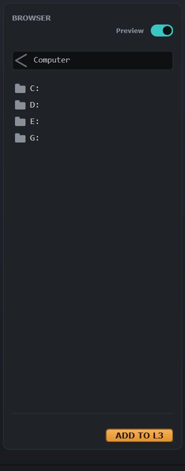
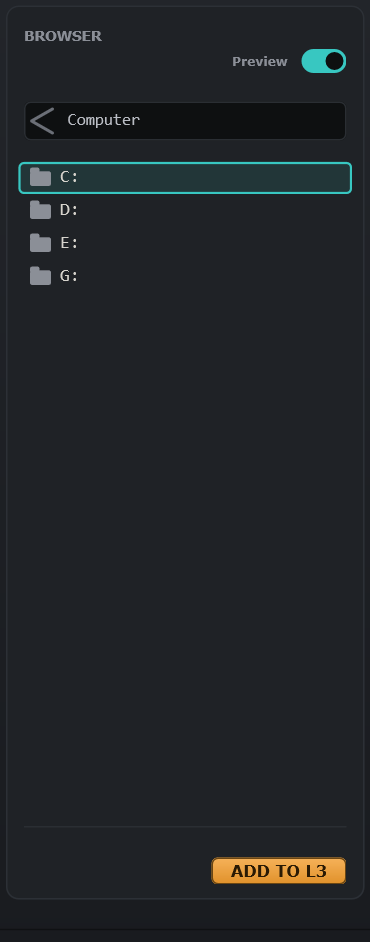
| Action | Result |
|---|---|
| Backspace | Up one level. |
| Mouse Back / Forward buttons | Back / forward through the folder history (while the pointer is over the browser). |
| Alt+← / Alt+→ | Back / forward through the history. |
| Enter | Open the framed folder or add the selected file. |
| ↑ / ↓ | Move through the list. |
A kit is a folder. SAVE KIT creates this structure:
My Kit\
kit.json all pad settings, layers and sample references
samples\
kick_01.wav every sample used by the kit, copied here
kick_02.wav
...kit.json are relative to the kit folder, so the folder can be zipped, moved to another disk or another computer, and loaded with LOAD KIT without any missing files.samples\ are not copied again. If two different files share a name, the second gets a _2 suffix.Minigun exposes 17 stereo outputs: Main and Out 1-2 … Out 31-32 (34 channels). Each pad chooses its bus with the OUT drop-down, and can send a mono signal to a single channel with the L / R modes.
Other DAWs work the same way: enable the plug-in's aux outputs and route each pair to its own track. A pad set to an output the host has not enabled falls back to Main, so nothing ever goes missing.
To send a pad to one channel only, choose the pair in OUT and set L (odd channel) or R (even channel). With SUM on, a stereo sample is folded to mono; with SUM off, only the matching side of the sample is used.
| Where | Gesture | Result |
|---|---|---|
| Pad | Click (top / bottom) | Play loud / soft, select the pad |
| Pad | Drop files | Add the files to the active layer |
| Pad | Drag onto another pad | Move the pad there after confirming (overwrites it, empties the original) |
| Range bar | Click segment | Audition that layer (RR/RND applies) |
| Range bar | Drag divider | Change velocity ranges |
| Layer row | × / right-click, or − LAYER | Delete layer |
| Chip | Click / click × | Preview / remove sample |
| NOTE drop-down | Mouse wheel | ±1 semitone |
| Browser | Backspace | Up one folder |
| Browser | Mouse Back / Forward, Alt+←/→ | History back / forward |
| Browser | Double-click / Enter | Open folder or add file to the selected layer |
| Path field | Type path + Enter | Jump to folder or file |
| Anywhere | Ctrl+Z / Ctrl+Y | Undo / redo the last kit edit |
| Symptom | Check |
|---|---|
| No sound in Standalone | Options → Audio/MIDI settings: pick an output device. Another program (a DAW with ASIO) may hold the device exclusively. |
| Pads light but a pad is silent | Its samples may be missing (moved or renamed on disk). Re-add them; then SAVE KIT so they are copied into the kit folder. |
| Pad routed to Out 5-6 comes out of Main | The host has not enabled that bus. Increase the track channel count or enable the plug-in's outputs; the footer outs value shows how many are active. |
| Plug-in not listed in the DAW | Make sure Minigun.vst3 is in C:\Program Files\Common Files\VST3 and rescan plug-ins. |
| Wrong pad plays from the keyboard | Check NOTE on each pad; several pads may share a note. Use LEARN to assign quickly. |
Minigun v0.3 · Dallas Audio · Manual generated September 2026.